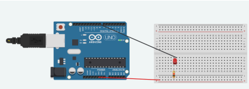
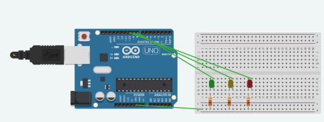
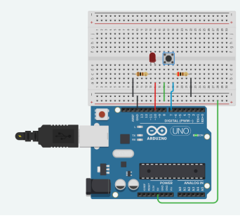
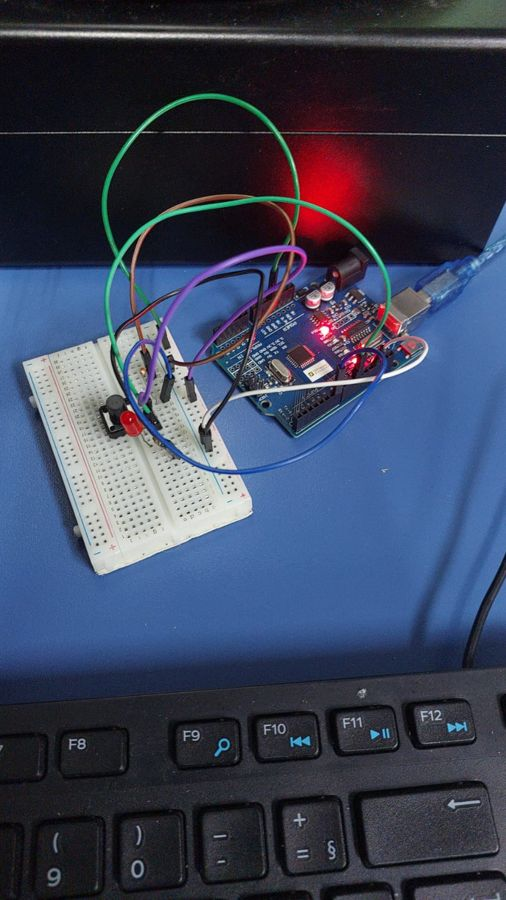

INTERNET DAS COISAS
ATIVIDADE TÉCNICA
Grand Prix SESI/SENAI
Desenvolver soluções inovadoras para problemas reais, estimulando o pensamento criativo e aplicação de conhecimentos técnicos em desafios tecnológicos.
Criação de proposta completa para a Petrobras, incluindo identificação do problema, prototipagem e pitch de apresentação final em ambiente de maratona.
A atividade proporcionou uma experiência prática de inovação semelhante ao mercado de trabalho. Desenvolver uma solução real aproximou a teoria da prática profissional.

LED e Sinalização Industrial
Não mencionadas
Compreender o funcionamento de um LED controlado pelo Arduino, aplicando conceitos de programação, eletrônica e automação para simular sistemas de sinalização utilizados na indústria.
A atividade consistiu na montagem e programação de um circuito com Arduino para controlar o acionamento de um LED por meio de uma porta digital. Durante o desenvolvimento, foram utilizados componentes eletrônicos como LED, resistor e protoboard, permitindo compreender o funcionamento da corrente elétrica, da polaridade dos componentes e da lógica de programação empregada no controle do circuito.
const int led = 13; // Pino onde o LED está conectado
void setup() {
pinMode(led, OUTPUT);
}
void loop() {
digitalWrite(led, HIGH); // Acende o LED
delay(1000); // Espera 1 segundo
digitalWrite(led, LOW); // Apaga o LED
delay(1000); // Espera 1 segundo
}
O projeto foi desenvolvido para demonstrar, de forma prática, como sistemas de sinalização luminosa funcionam em ambientes industriais. Além de aplicar conceitos de eletrônica e programação, a atividade mostrou como controladores eletrônicos podem ser utilizados para indicar o estado de máquinas e processos, semelhante às torres de sinalização e aos sistemas Andon utilizados na indústria.
"A atividade foi muito interessante, pois permitiu compreender os conceitos básicos de eletrônica e programação de forma prática. Também foi possível relacionar o funcionamento do protótipo com aplicações reais utilizadas em processos industriais."

Semáforo com Arduino
Não mencionadas
Desenvolver um sistema de sinalização utilizando Arduino, aplicando conceitos de programação, eletrônica e lógica sequencial para simular o funcionamento de um semáforo utilizado no controle de fluxo de pessoas, veículos e máquinas.
A atividade consistiu na montagem e programação de um circuito com três LEDs (vermelho, amarelo e verde) controlados pelo Arduino. O sistema foi programado para executar uma sequência lógica de acionamento, simulando o funcionamento de um semáforo. Durante o desenvolvimento, foram utilizados resistores para proteção dos LEDs e estudados conceitos como portas digitais, temporização e controle de dispositivos eletrônicos.
void setup()
{
pinMode(8, OUTPUT);
pinMode(9, OUTPUT);
pinMode(10, OUTPUT);
}
void loop()
{
digitalWrite(8, HIGH);
delay(500); // Wait for 1000 millisecond(s)
digitalWrite(8, LOW);
delay(500); // Wait for 1000 millisecond(s)
digitalWrite(9, HIGH);
delay(500); // Wait for 1000 millisecond(s)
digitalWrite(9, LOW);
delay(500); // Wait for 1000 millisecond(s)
digitalWrite(10, HIGH);
delay(500); // Wait for 1000 millisecond(s)
digitalWrite(10, LOW);
delay(500); // Wait for 1000 millisecond(s)
}
O projeto foi desenvolvido para demonstrar o funcionamento de sistemas de sinalização automática, muito utilizados em cruzamentos, indústrias e processos de automação. A atividade permitiu compreender como a programação e a eletrônica trabalham em conjunto para controlar dispositivos de forma organizada, segura e eficiente.
"A atividade foi muito interessante, pois permitiu aplicar conceitos de programação e eletrônica na construção de um sistema semelhante aos utilizados em situações reais. Além disso, ajudou a compreender a importância da lógica sequencial e da automação no controle de processos."


Push Button e Comando de Máquinas
Não mencionadas
Compreender o funcionamento de um push button como dispositivo de entrada digital, aplicando conceitos de programação e eletrônica para controlar uma saída por meio do Arduino, simulando comandos utilizados em máquinas industriais.
A atividade consistiu na montagem e programação de um circuito utilizando um push button para controlar o acionamento de um LED com Arduino. O projeto permitiu estudar o funcionamento das entradas digitais, a leitura de comandos por meio do digitalRead(), estruturas condicionais e diferentes lógicas de acionamento, como a momentânea e a toggle, além de compreender a importância dos resistores pull-up e pull-down para o funcionamento estável do circuito.
int buttonPin = 7; // Define buttonPin no pino digital 7
int ledPin = 10; // Define ledPin no pino digital 10
int estadoBoton = 0; // Variável responsável por armazenar o estado do botão (ligado/desligado)
bool estadoLed = false; // Variável booleana responsável por armazenar o estado do LED (ligado = true/desligado = false)
void setup()
{
pinMode(ledPin, OUTPUT); // Define ledPin (pino 10) como saída
pinMode(buttonPin, INPUT); // Define buttonPin (pino 7) como entrada
}
void loop()
{
estadoBoton = digitalRead(buttonPin); // Lê o valor de buttonPin e armazena em estadoBoton
if (estadoBoton == HIGH) // Se estadoBoton for igual a HIGH ou 1
{
estadoLed = !estadoLed; // Inverte estadoLed
delay(500); // Intervalo de 0,5 segundo
}
if (estadoLed == true) // Se estadoLed for igual a true (verdadeiro)
{
digitalWrite(ledPin, HIGH); // Define ledPin como HIGH, ligando o LED
}
else // Senão
{
digitalWrite(ledPin, LOW); // Define ledPin como LOW, desligando o LED
}
}
O projeto foi desenvolvido para demonstrar como botões de comando são utilizados em sistemas de automação industrial. A atividade mostrou como dispositivos de entrada enviam sinais ao microcontrolador, que processa essas informações e controla atuadores de acordo com a lógica programada, princípio presente em painéis de comando e máquinas industriais.
"A atividade foi muito interessante, pois possibilitou compreender como dispositivos de entrada e saída trabalham em conjunto em sistemas automatizados. Além disso, permitiu aplicar conceitos de programação e eletrônica em uma situação semelhante às encontradas na indústria."
As atividades do 3º trimestre serão adicionadas aqui em breve.